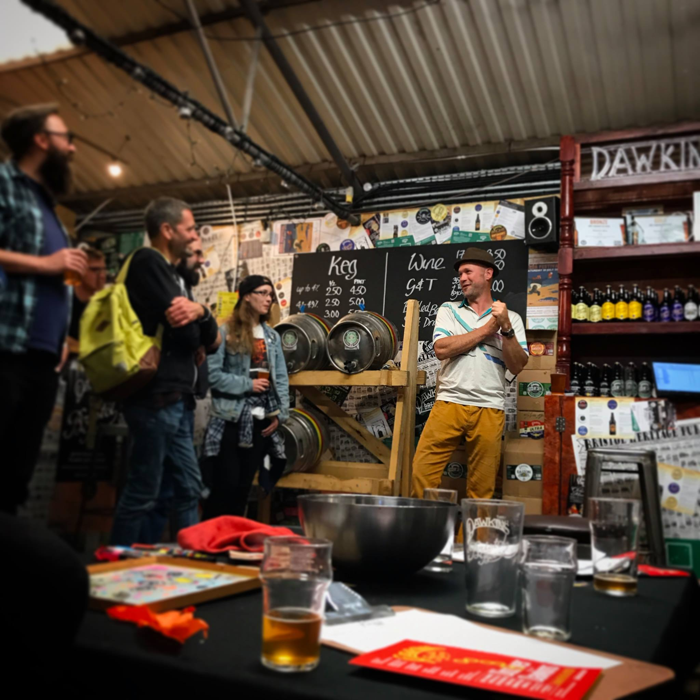
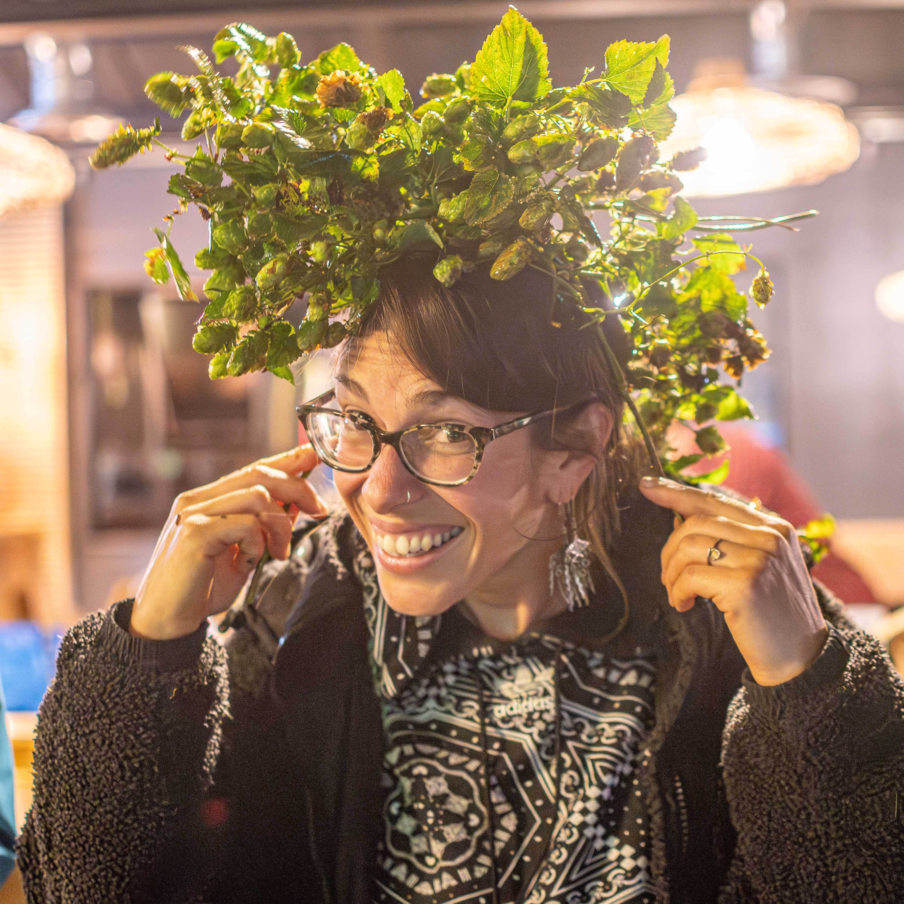
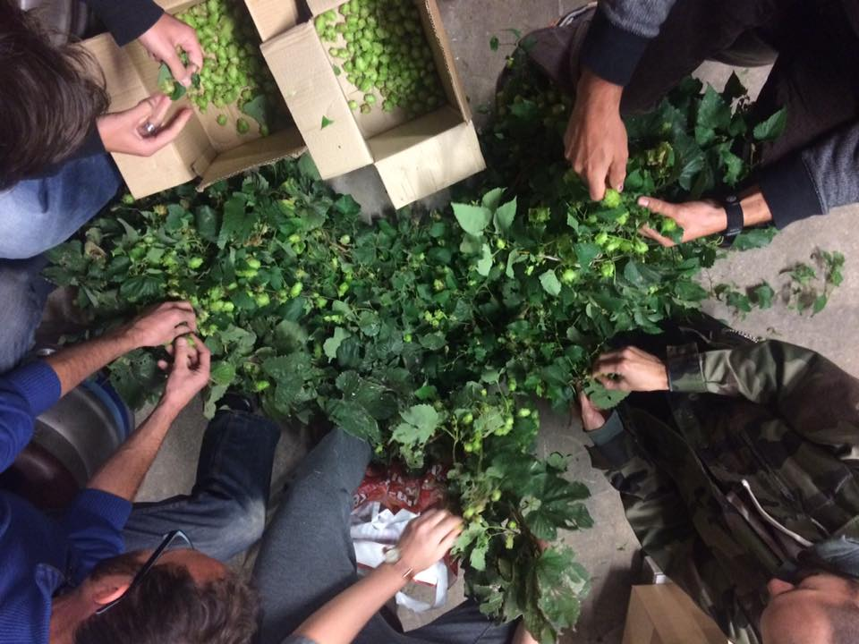
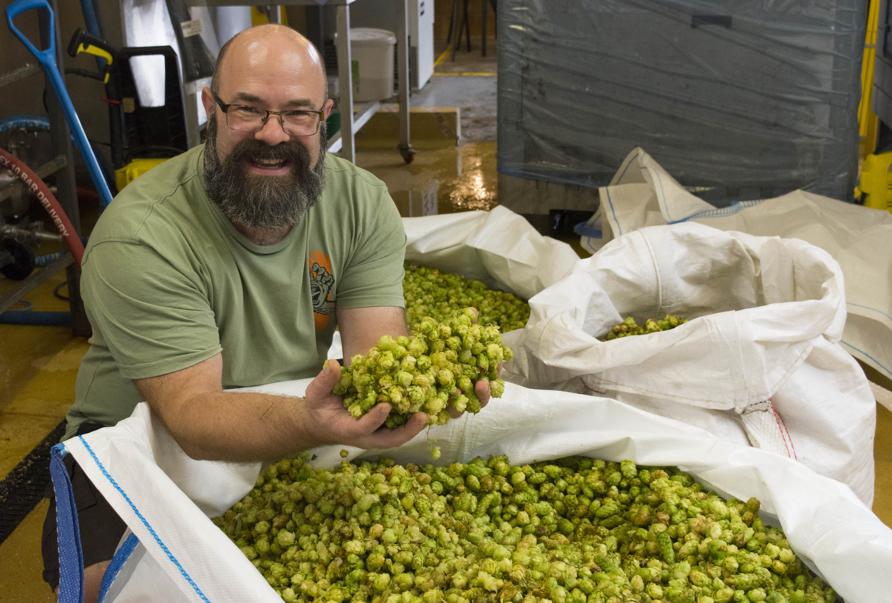

What's it all about?
Good question! we are an ever-expanding independent group of like-minded people, who love to grow hop plants and drink quality beer! It's all about hops and beer but mostly hops. Whether they’re in pots or the ground, and whether they’re on our allotments, balconies, gardens or pretty much anywhere hops can grow, we grow them.
Visit our HopsWiki for more information on growing hops.
Everyone who gets involved will join a passionate community of growers and experience the simple pleasure of watching the hop mature, as well as the joy of harvesting their ‘cones’ on the same day as everyone else and collectively adding them to that year’s brew.
Beer is usually made with dried hops or compressed dried pellets which have lost a lot of their oils and flavours. Our green hop ale is unusual because we get the hops from the bines to the brewing kettle in hours, so more of the flavour is preserved.
In other words, with good local hops, you can brew a unique beer with a very special taste.
By early autumn the beer is ready for sampling, which everyone in the collective gets to do at a party as soon as it’s brewed.
What's more, you’ll likely be able to wander into your local pub and buy a pint that you helped make.
For more about our collaborative beers check out the
Beer Cellar
We have had contributions of hops over the years.
A total yield of kg has gone in to our collaberative beers.
What's in the Brew Kettle and dates for the Diary
Our Environmental Impact
As we only use green "wet" hops in our beer there is no need to convert the hops into pellets this saves time and energy, also with our collective of growers nestled so close to the breweries, this slashes transportation needs, reducing the carbon footprint. The best part as our plants regrow each year the collective can produce sustainable hops that help keep our collaborative beers eco-friendly and close to home.